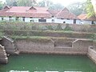

HILL PALACE MUSEUM,THRIPUNITHURA



Owner: Govt.of.Kerala
Established:1865
contact: 04842781113
Type: Archeological museum, History museum
Hill Palace is an archaeological museum and palace located in the Tripunithura neighbourhood of Kochi, Kerala, India. It is the largest archeological museum in the state and was the imperial administrative office and official residence of the Cochin Maharaja. Built in 1865, the palace complex consists of 49 buildings spreading across 54 acres (220,000 m2) and built in the traditional architectural style. The complex has an archaeological museum, a heritage museum, a deer park, a pre-historic park and a children's park.[1] The campus section of the museum is home to several rare species of medicinal plants. Presently, the palace has been converted into a museum by The Kerala State Archaeology Department and is open to the public. The palace is about 10 kilometres (6.2 mi) from the city centre and is reachable by road and by rail.
The Centre for Heritage Studies (CHS), an autonomous research and training institute set up by the Department of Cultural Affairs, of the Government of Kerala also functions at the site. The CHS is designated as the 'Manuscript Conservation Centre' (MCC) and 'Manuscript Resource Centre' (MRC) by the National Mission for Manuscripts.[2]